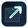

Using Local Files
You can set any local HTML dashboard (e.g. file:///path/to/dashboard.html) as your new tab page.
Requires enabling "Allow access to file URLs" in extension settings.
Open Extension Settings →

Minimalist URL ForwarderRedirect every new tab to your favorite web app, personal dashboard, or local file.
You can set any local HTML dashboard (e.g. file:///path/to/dashboard.html) as your new tab page.
Runs natively via browser tab APIs with zero telemetry, zero analytics, and zero background resource usage.